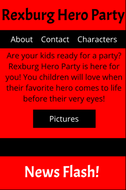
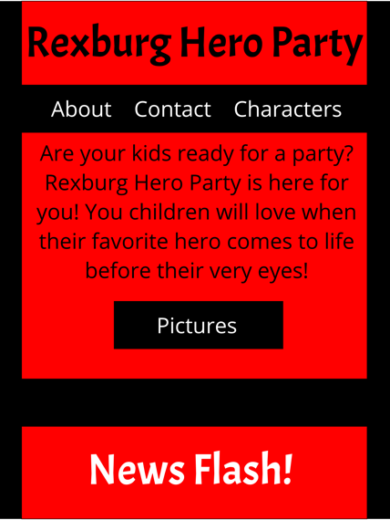
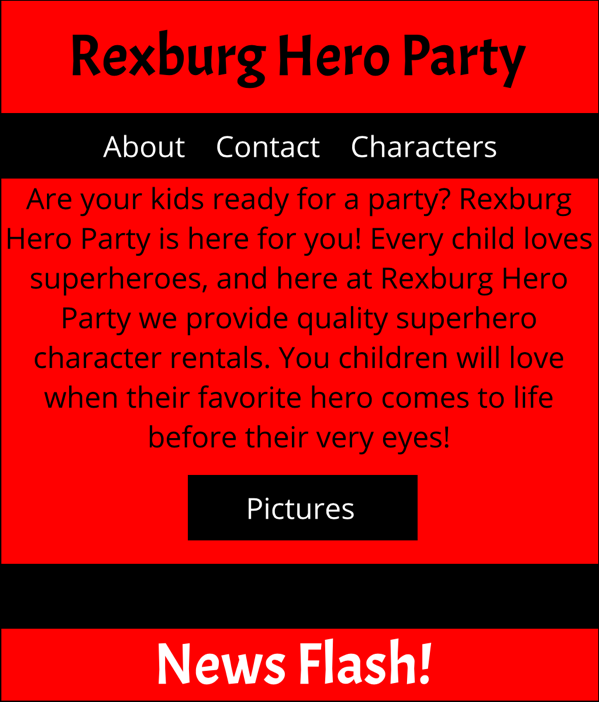

Austin Bowler
Project Purpose
The project will recreate and make a new updated version of my company’s (Rexburg Hero Party, a character rental service, at www.rexburgheroparty.weebly.com ) web page. It will deliver information about my company, how to book a rental, news about my company, pictures of rental products, and surveys. This time I will create a page from scratch rather than use a provided template from another company.
The Audience
The audience will include (in the area or Rexburg) parents of children, small business owners, and anybody else in the Rexburg community who loves your friendly neighborhood Spiderman. Web site visitors will usually start at the age of 20, but can really be anybody with children, grandchildren, people who want advertisements for their business, and those who know any of the above.
Web Pages
Home: Contains the main title and subtitle, a button (below the subtitle) to takes users to the pictures page. Navigation tag bar is below the main title and above the subtitle; everything can be accessed from here except the “pictures” page. Below that is a small area for the news, followed by a button that takes a user to the about page. The first thing below the head is a link to the Facebook, email, and Instagram. Surveys follow, proceeded by links again to Facebook, email, and Instagram. Bolded footer with links to book a rental.
About: Contains the main title and a button that takes users to the characters’ page. Navigation tag bar is below the main title; everything can be accessed from here except the “pictures” page. The first thing below the head is a section header, proceeded by a paragraph explaining the company. Below that is a section header and a paragraph explaining who runs the company, and that is followed by a section header and a paragraph introducing the owner of the company (me). A picture of the owner is displayed. The next item includes links to Facebook, email, and Instagram. Bolded footer with links to book a rental.
Contact: Contains the main title. Navigation tag bar is below the main title; everything can be accessed from here except the “pictures” page. The first thing below the head is a section header, proceeded by an email submission form, followed by a submit button. Below this is a paragraph describing the submission form. The next item includes links to Facebook, email, and Instagram. Bolded footer with links to book a rental.
Characters: Contains the main title. Navigation tag bar is below the main title; everything can be accessed from here except the “pictures” page. This is followed by header describing the character, and a picture of the character. The header is linked to the “pictures” page, and will show that as you scroll over it. Below all of the characters, there is a header, followed by a summary paragraph. Next is a button that says, “Vote for more!” This leads to the home page section with the surveys. The next item includes links to Facebook, email, and Instagram. Bolded footer with links to book a rental.
Pictures: Contains the main title. Navigation tag bar is below the main title; everything can be accessed from here except the “pictures” page (obviously, because the user is on it). This is followed by header describing the page, preceding is another heading describing the next picture. A picture is displayed under that. This pattern repeats until there is no more pictures. A button is displayed at the end – center justified – it takes a user back to the top. The next item includes links to Facebook, email, and Instagram. Bolded footer with links to book a rental.
Wireframe Sketches
Small

Medium

Large

Usability Concepts
1. Site load time is reasonable: watch file sizes
2. Adequate text to background contrast: no squinting to read, use Hexadecimal contrast
3. Font size/spacing is easy to read: keep spacing in mind
4. Flash & add ons are used sparingly: watch file sizes and ads
5. Images have appropriate ALT tags: double check after finishing each page
6. Site has custom not found/404 page: N/A
7. Company logo is prominently placed: Top of the page
8. Tagline makes company’s purpose clear: Explanation of services
9. Home page is digestible in 5 seconds: not too much information or options
10. Clear path to company information: contact information and about page linked in navigation bar.
11. Clear path to contact information: contact information and about page linked in navigation bar.
12. Main navigation is easily identifiable: top of page, different color than background
13. Navigation labels are clear & concise: short page title links
14. Number of buttons/links is reasonable: Sparingly and only when necessary
15. Company logo is linked to home page: company logo will be linked
16. Links are consistent & easy to identify: short and concise page title links
17. Site search is easy to access: N/A
18. Major headings are clear & descriptive: short and concise page titles
19. Critical content is above the “fold”: Explanation of services above the fold
20. Styles & colors are consistent: use Hexadecimal… I love hexadecimal
21. Emphasis (bold, etc.) is used sparingly: using only on important stuff
22. Ads & pop ups are unobtrusive: pop up only pops up when page is first activated
23. Main copy is concise & explanatory: look over work afterward
24. URLs are meaningful & user friendly: short and concise page titles and links
25. HTML page titles are explanatory: short and concise page titles